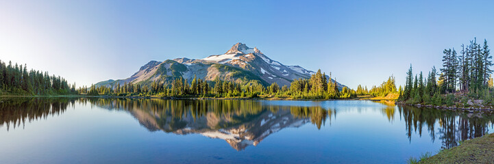
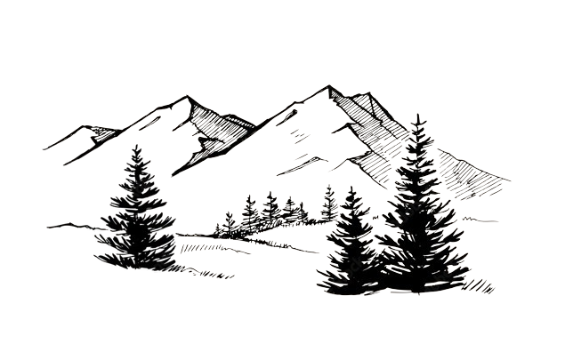
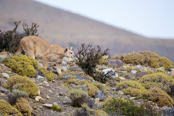
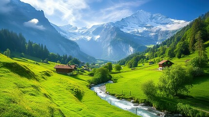
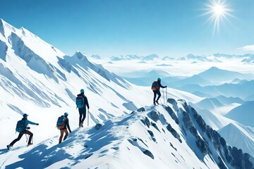
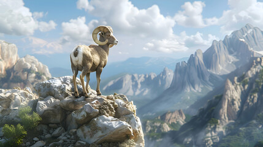

MOUNTAIN PHOTO & VIDEO

Mountain significance
It’s a fact that without mountain we will not able to survive because due to
continuously wind blowing pressure is powerful than storm. So be glad to have a
mountains and hills. Not only this, mountain also makes feel us happy.
Such a great nature gift! Is not it?

×

A hill is a piece of land that rises higher than everything surrounding it.
It looks like a little bump in the Earth. Since they are higher than everything around them,
hills are good places to get a nice view. Hills are easier to climb than mountains.

The mighty chunks rise all over the world, including the oceans. They usually have steep, sloping sides and sharp or rounded
ridges, and a high point, called a peak or summit. Most geologists classify a mountain as a landform that rises at least 1,000
feet (300 meters) or more above its surrounding area. A mountain range is a series or chain of mountains that are close together.
The mighty chunks rise all over the world, including the oceans. They usually have steep, sloping sides and sharp or rounded ridges,
and a high point, called a peak or summit. Most geologists classify a mountain as a landform that rises at least 1,000 feet (300 meters)
or more above its surrounding area. A mountain range is a series or chain of mountains that are close together.
How Are Mountains Formed?
The world's tallest mountain ranges form when pieces of Earth's crust—called plates—smash against each other in a process called plate
tectonics, and buckle up like the hood of a car in a head-on collision. The Himalaya in Asia formed from one such massive wreck that
started about 55 million years ago. Thirty of the world’s highest mountains are in the Himalaya. The summit of Mount Everest, at 29,035
feet (8,850 meters), is the highest point on Earth.
The tallest mountain measured from top to bottom is Mauna Kea, an inactive volcano on the island of Hawaii in the Pacific Ocean. Measured
from the base, Mauna Kea stands 33,474 feet (10,203 meters) tall, though it only rises 13,796 feet (4,205 meters) above the sea.
Volcano mountain form when molten rock from deep inside the Earth erupts through the crust and piles up on itself. The islands of Hawaii
were formed by undersea volcanoes, and the islands seen above water today are the remaining volcano tops. Well-known volcanoes on land
include Mount St. Helens in Washington State and Mount Fuji in Japan. Sometimes volcanic eruptions break down mountains instead of
building them up, like the 1980 eruption that blew the top of Mount St. Helens.
When magma pushes the crust up but hardens before erupting onto the surface, it forms so-called dome mountain. Wind and rain pummel the
domes, sculpting peaks and valleys. Examples include the Black Hills of South Dakota and the Adirondack Mountains of New York. Plateau
Mountains are similar to dome mountains, but form as colliding tectonic plates push up the land without folding or faulting. They are
then shaped by weathering and erosion.
Other types of mountains form when stresses within and between the tectonic plates lead to cracking and faulting of the Earth's surface,
which forces blocks of rock up and down. Examples of fault-block Mountain include the Sierra Nevada in California and Nevada, the Tetons in Wyoming, and the Harz Mountains in Germany.
Impact of Mountains on Habitats and Geopolitics
Mountains often serve as geographic features that define natural borders of countries. Their height can influence weather patterns,
stalling storms that roll off the oceans and squeezing water from the clouds. The other side is often much drier. The rugged landscapes
even provide refuge—and protection—for fleeing and invading armies.




mountain describe
kathmandu
Kathmandu, Nepal
You can specify background images
for any visible HTML element.
In this example, the background image
is specified for a p element.
By default, the background-image
will repeat itself in the direction(s)
where it is smaller than the element
where it is specified. (Try resizing the
browser window to see how the
background image behaves.